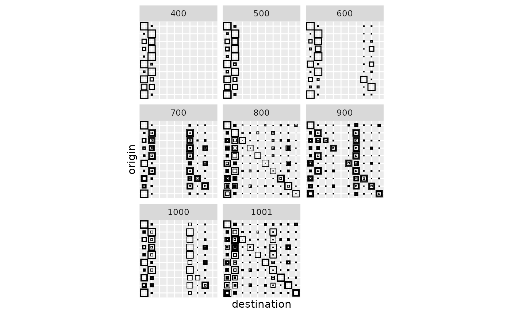
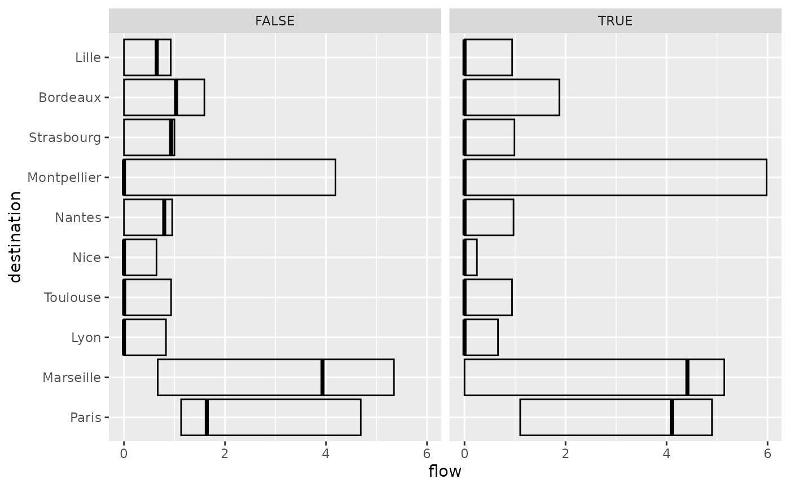
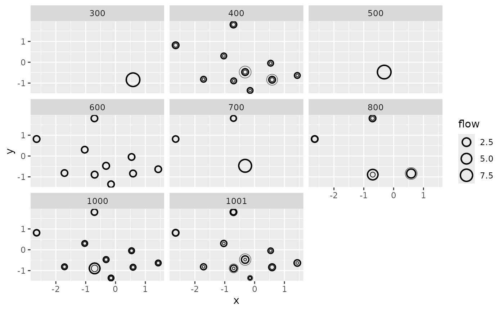

Create a complete variability plot for spatial interaction models in a data frame
Source:R/sim_df_grid_var_autoplot.R
grid_var_autoplot.RdThis function combines spatial variability interaction model representations
similar to the ones produced by autoplot.sim_list() into a single ggplot.
It provides an alternative graphical representation to the one produced by
autoplot.sim_df() and by grid_autoplot() for collection of spatial
interaction models in a sim_df object.
Usage
grid_var_autoplot(
sim_df,
key,
flows = c("full", "destination", "attractiveness"),
with_names = FALSE,
with_positions = FALSE,
cut_off = 100 * .Machine$double.eps^0.5,
adjust_limits = FALSE,
with_labels = FALSE,
qmin = 0.05,
qmax = 0.95,
normalisation = c("origin", "full", "none"),
fw_params = NULL,
...
)Arguments
- sim_df
a data frame of spatial interaction models, an object of class
sim_df- key
the wrapping variable which acts as group identifier for spatial interaction models
- flows
"full"(default),"destination"or"attractiveness", see details.- with_names
specifies whether the graphical representation includes location names (
FALSEby default)- with_positions
specifies whether the graphical representation is based on location positions (
FALSEby default)- cut_off
cut off limit for inclusion of a graphical primitive when
with_positions = TRUE. In the attractiveness or destination representation, circles are removed when the corresponding upper quantile value is below the cut off.- adjust_limits
if
FALSE(default value), the limits of the position based graph are not adjusted after removing graphical primitives. This eases comparison between graphical representations with different cut off value. IfTRUE, limits are adjusted to the data using the standard ggplot2 behaviour.- with_labels
if
FALSE(default value) names are displayed using plain texts. IfTRUE, names are shown using labels.- qmin
lower quantile, see details (default: 0.05)
- qmax
upper quantile, see details (default: 0.95)
- normalisation
when
flows="full", the flows can be reported without normalisation (normalisation="none") or they can be normalised, either to sum to one for each origin location (normalisation="origin", the default value) or to sum to one globally (normalisation="full").- fw_params
parameters for the ggplot2::facet_wrap call (if non
NULL)- ...
additional parameters passed to
autoplot.sim_list()
Details
The rationale of autoplot.sim_df() is to display a single value for each
spatial interaction model (SIM) in the sim_df data frame. On the contrary,
this function produces a graphical representation of the variability of a
partition of the SIMs in the data frame, using autoplot.sim_list() as the
graphical engine.
The key parameter is used to partition the collection of SIMs. It can be
any expression which can be evaluated in the context of the sim_df
parameter. The function uses this parameter as the wrapping variable in a
call to ggplot2::facet_wrap(). It also uses it as a way to specific a
partition of the SIMs: each panel of the final figure is essentially the
variability graph generated by autoplot.sim_list() for the subset of the
SIMs in sim_df that match the corresponding value of key.
Parameters of ggplot2::facet_wrap() can be set using the fw_params
parameter (in a list).
Examples
positions <- matrix(rnorm(10 * 2), ncol = 2)
distances <- as.matrix(dist(positions))
production <- rep(1, 10)
attractiveness <- c(2, rep(1, 9))
all_flows <- grid_blvim(distances, production, seq(1.05, 1.45, by = 0.1),
seq(1, 3, by = 0.5),
attractiveness,
bipartite = FALSE,
epsilon = 0.1, iter_max = 1000,
destination_data = list(names = LETTERS[1:10], positions = positions),
origin_data = list(names = LETTERS[1:10], positions = positions)
)
all_flows_df <- sim_df(all_flows)
## group models by iteration number
grid_var_autoplot(all_flows_df, iterations)

## or by convergence status (showing destination)
grid_var_autoplot(all_flows_df, converged, flow = "destination")

## using positions
grid_var_autoplot(all_flows_df, iterations,
flow = "destination",
with_positions = TRUE
)
